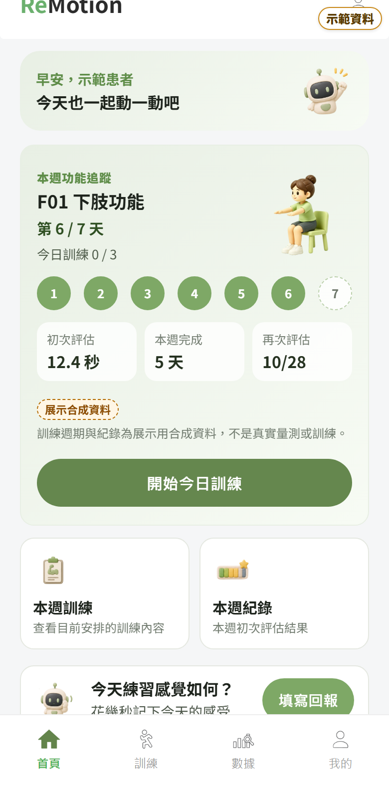

P3


P5


P6


P7


P8


P9


同一故事的輔助畫面（非簡報頁）
- X-01：下一階段建議：需要進一步確認（待復健師檢視）（患者，第 7 天 10/28 10:06）
- X-02：復健師確認後（復健師，第 7 天 10/28 14:03）
- X-03：患者接受這份安排後（患者，第 7 天 10/28 18:31）
- X-04：接受後的首頁：第 2 週第 1 天（基準 10.9 秒，再次評估 11/03）（患者，第 7 天 10/28 18:31）
- X-05：數據總覽（同一故事）（患者，第 7 天 10/28 10:05）


影片片段
- P05-P06-day1-assessment-recommendation.webm（P5–P6）：第 1 天：評估準備 → 假鏡頭評估頁 → 合成完成結果 → 目標、時間 → 推薦結果。評估頁沒有真人，不可當成真人辨識片段。
- P07-P08-day6-training-report.webm（P3、P7、P8）：第 6 天：首頁 → 坐姿起立準備 → 合成輸入計次 → 訓練結果 → 本週期回報。計次畫面為合成輸入示範。
- P08-day7-reassessment-comparison.webm（P8）：第 7 天：再次評估（合成完成結果）→ 測試條件 → 前後比較 → 狀況確認 → 待復健師檢視。
- P09-day7-therapist-review.webm（P3、P9）：第 7 天下午：復健師首頁 → 個案 → 規則備用摘要 → 檢視並確認下一週安排。
- P09-day7-patient-accept.webm（P9）：第 7 天晚上：患者查看已確認安排 → 接受 → 第 2 週開始。
缺少、需要真人補拍
- 真人五次坐站評估（鏡頭、計次、計時同時運作）的畫面與影片：本輪沒有真人錄製，P05-02 需補拍。
- 真人坐姿起立（正式週期訓練）辨識與計次的畫面與影片：本輪只有合成輸入，P07-02 需補拍；真人坐站 0/5 問題仍未結案。
清單檔：ASSET_LIST.csv・ASSET_LIST.md・拍攝紀錄 STORY_LOG.txt